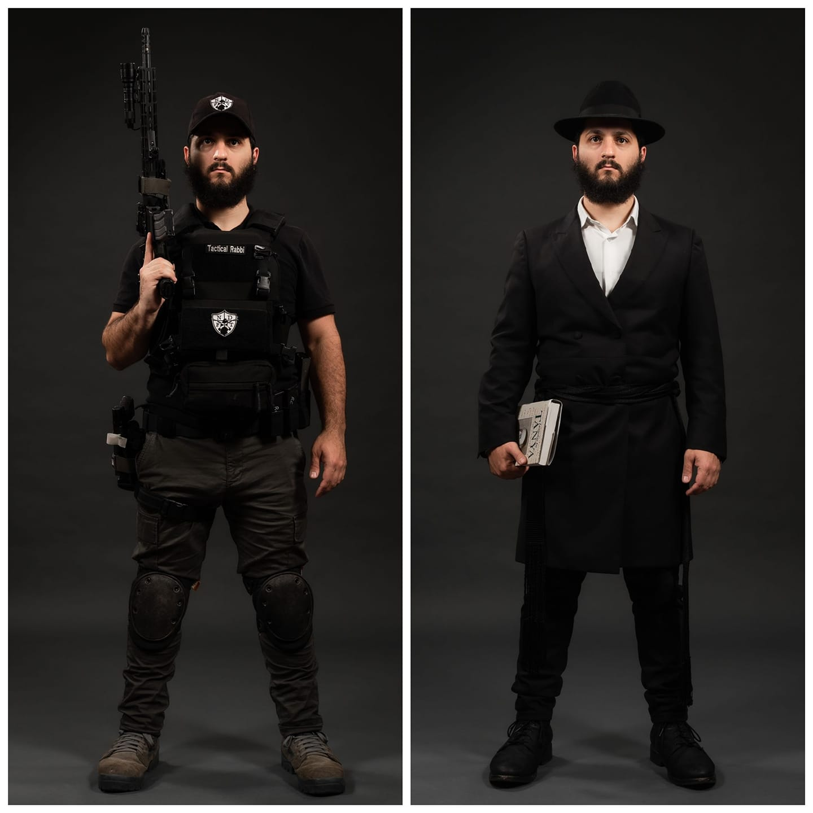

Raziel Cohen is an ordained Rabbi and a certified firearms instructor — two identities that, on paper, shouldn't fit together. In practice, they're the same calling: protecting people, preparing communities, and bridging the gap from when an incident begins until help arrives.
Raziel Cohen, known as "The Tactical Rabbi," is an ordained Rabbi, firearms instructor, and sought-after public speaker regularly featured in prominent media outlets such as Fox News, Vice, NRA TV, The LA Times, New York Post, The Drudge Report, and more. His popular YouTube channel has amassed over 30 million views, offering educational and entertaining content.
Rabbi Cohen is on a mission, actively traveling across the United States to provide firearms training, security assessments for facilities, and lockdown training for schools. Certified by the NRA and DOJ, and approved by Homeland Security for assessments, he ensures he stays current with training and emerging threats through active participation in relevant courses.
Cohen's extensive firearms training includes renowned programs like Magpul Dynamics, Tactical Response, GoRuck Counterterrorism, and Condition Gray — the foundation his own courses are built on.
Every course is built on top of formal instructor-level training — not just personal experience.
Firearms Instruction
RSO
CRSO
Security Assessments
Training Program
Browse upcoming courses or reach out to book a private lesson, security assessment, or speaking engagement.